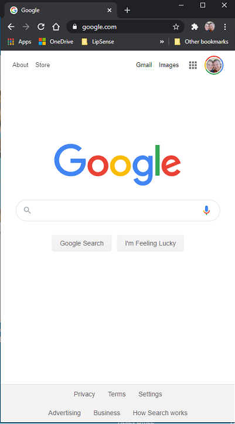
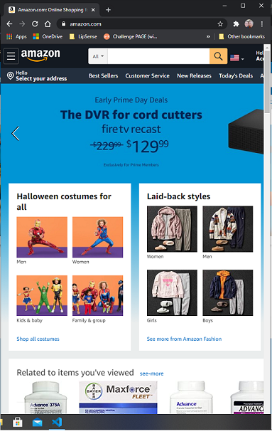

White Space
https:/google.com/
The white space in google leads the user directly to the most important parts of the site. Those are the search bar and the logo. This is a clean and clear website.
Hicks Law
https://www.amazon.com/
Hicks law is essentially the idea that to many options makes it difficult for consumers to make a descicion. In regards to a retail website, amazon does a great job with hicks law by limiting the amount of products, allowing filters to narrow searches and offering suggestions between price ranges
Contrast
https://facebook.com/The idea of contrast vs white space is that even though there is alot on a page that important objects stand out. On facebook the post on the feed are larger and clearer than anything else on the page. Hence standing out admist all the clutter on the page.